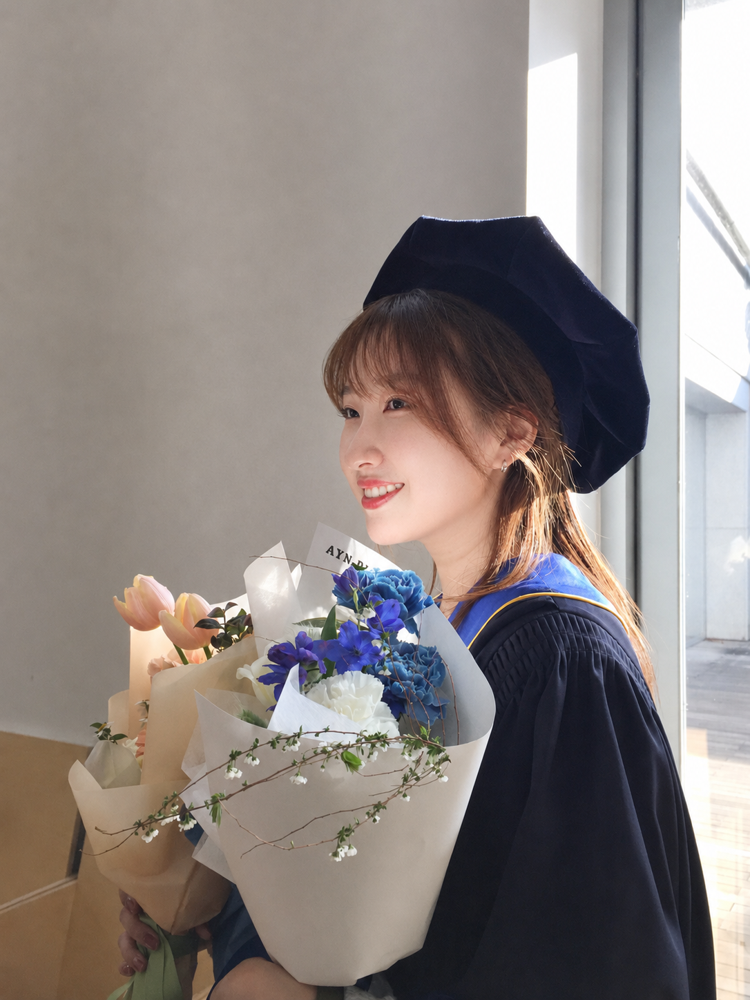

SyRuP: Enhancing System-Prompt Following via Reward-Guided Prediction in LLM Decoding
EMNLP 2026

M.S. Student in Artificial Intelligence
Yonsei University
I received my B.S. in Applied Statistics from Yonsei University and am currently pursuing an M.S. in Artificial Intelligence at Yonsei University. I am advised by Prof. Jaehyung Kim at the Machine and Language Learning Lab (ML3).
My research aims to develop user-centered AI systems that understand users and their contexts, ultimately bridging advances in AI research with meaningful improvements in real-world user experiences. My research interests include LLM alignment, personalization, and reliable instruction following.